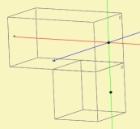
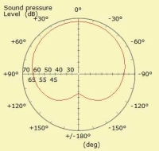

Form - Pressure Box
| Home | BEM-Part |
 |
 |
 |


 |
 |
The component Pressure Box implements either only a single pressure point source or a line of sources. The radiation of the source is basically spherical. However, the radiation pattern can be specified in various ways.
Create a new Pressure Box-component with the help of the New Component Form. The home of a Pressure Box-component is page BEM. Edit an existing component by dbl-click its entry on page BEM or issue menu Edit/Parameters or press CTRL+E.
The Pressure Box creates pressure sources for the specified
Subdomain.
If the Subdomain also provides boundary elements it becomes a domain which
needs to be solved with the help of the
Boundary Element Method.
If the Subdomain only contains pressure sources and optionally an
Infinite Baffle
this domain is treated with the Direct Sound Analysis.
Symmetry
In case of symmetry or the use of an Infinite Baffle mirror pressure sources will be installed automatically.
Dimensions
The following desciption is for Dim = 3D, which allows the mixing of the directivity of files, shapes and clusters of points.
The pressure box can also be used to provide an ideal pressure source for Dim=2D and for Dim=CircSym. In this case, however, it makes sense to apply the radiation-tools only exclusively.
Page - Name
On page Name provide the name of the component in form of a string. Further there is space for annotations.
Page - Directivity
"Directivity" stands for the radiation pattern of the pressure source. There are three means for providing directivity:
- Directivity files
- Lines of points
- Shape simulating directivity
The directivity response will be weighted by all specified, i.e. accumulative. If none is specified there will be a point source radiating with constant amplitude into all directions.
During calculation in a 3D-environment the pressure source has to provide directivity for any polar and any azimuthal angle. Values for in-between points are interpolated on the sphere.
Directivity Files
A Directivity File is a set of frequency response curves of sound pressure over a range of angles. Specify the reference(s) to a Contour-File-object.
You can approximate a balloon response by using Directivity File(s) for the horizontal and the vertical plane. Spherical interpolation will be performed for in-between points. If you specify only one reference the balloon-interpolation will be done with Line of Points or Shape. If the latter are not specified the single Directivity File will be used for both directions. If no reference is specified the directivity defaults to Line of Points, Shape or is omni-directional.
The response of the Directivity File will be normalized internally. The normalization point is the on-axis angle. Hence, after normalization the spectrum of the on-axis response is one and all the other response functions are in relation to it.
The weighting of the frequency response of the Pressure Box is typically done at observation stage either with the help of the Fixed Driving Form or by means of the Lumped Element Network.
Lines of points
If Length is specified a distribution of points is installed. These points are positioned on a line or arc segment centered at the mounting point of the component. All points are driven equally by Nth part of the value. The total radiation is
p = 1/N· Σi exp(-jkdi)/di
with wavenumber k = ω/c and individual distance between point i and target point di.
Direction
The line or arc can lie in the horizontal or vertical plane of the component.
Length
The length of the line or the length of the secant.
Arc Angle
If specified, points would be stretched to lie on a segment of circle. Otherwise points are forming a line segment.
Num Points
Specify here the number of points on the line or on the arc.
If not specified the number of points are internally calculated to be:
N = Length/5mm
Shape simulating Directivity
If the size is specified this feature calculates the text-book directivity function for a flat piston in an infinite baffle. Mathematically these functions are symmetric with regard to front and rear. Asymmetry can be mimicked with the help of the combination with the Directivity File or the use of the Cardioidal Attenuation.
Shape
Shape specifies the shape of a flat piston: Disc, Rectangle, Ellipse.
Diameter or Width and Height
Size of the shape. If not specified simulation of the shape is not performed.
Cardio Level Attenuation
Simulates in a simple way the directivity for the rear radiation attempting to mimic cardioidal radiation pattern or diffraction. The value is the attenuation at the center-rear in dB.
Page - Visual
The graphical representation of the component provides hints, which helps to see the direction of radiation, for example by drawing a simple box around the source. The apparent cabinet is only a graphical means and does not install an acoustic boundary condition.
Cabinet
Width, Height and Depth
Size of the box.
Offset X, Y
By default the cabinet is drawn with the pressure point at the front center. With the help of these parameter the box can be shifted.
Colors
Color of Cabinet specifies the color of the box.
Color of Source is the color of the dot(s). The default color is red.
You can alter the settings at the Color-Form.
Page - Driving
At solving stage the driving pressure is p = 1 Pa. This is the default value. At observation stage this value will be multiplied by the corresponding parameter of the lumped element network or of the fixed driving table.
Amplitude
Value of amplification. By default the amplitude is p = 1 Pa.
Delay
Value of signal delay τ in seconds: p2 = p1·exp(-j·ω·τ)
Page - Position
A Pressure Box is positioned by attaching it to a coordinate from a Node-database, by using mesh-file-planes or by using the Shift parameter of the Scaling feature.
Positioning and orientation is described in chapter Form - Position.
Page - Formula
All parameters of format floating-point can be assigned a formula. Please check chapter Form - Formula for further details. Formula-identifiers are:
| Directivity | |
| dD | Diameter of shape |
| WD | Width of shape |
| HD | Height of shape |
| LineLength | Length of line |
| LineAngle | Angle in degree of arc |
| CardioLevel | dB-level of cardioidal attenuation |
| Visual | |
| dCab | Diameter of box |
| WCab | Width of box |
| HCab | Height of box |
| CabX | x-Offset of box |
| CabY | y-Offset of box |
| Driving | |
| Weight | Signal amplification |
| Delay | Signal delay |
| Position-Scaling | |
| RotateVert | Local rotation vertical |
| RotateHoriz | Local rotation horizontally |
| RotateAxial | Local rotation axially |
| OffsetAxial | Shift on-axis |
| RotateX | Rotation about x-axis |
| RotateY | Rotation about y-axis |
| RotateZ | Rotation about z-axis |
| ShiftX | Shift in x-direction |
| ShiftY | Shift in y-direction |
| ShiftZ | Shift in z-direction |
Examples
Example of single and free radiating Pressure Box i.e. without any boundaries. f = 5.4 kHz and Lp-range = 50 dB
| Configuration | Field observation |
| Directivity Files for horizontal and vertical planes Cardio Level = -30dB |
 |
| Single Directivity File Cardio Level = -30dB |
 |
| Directivity File for horizontal plane Simulation for vertical plane with Shape = Rectangle and HD = 100 mm Cardio Level = -30dB |
 |
| Only simulation with Shape = Rectangle, HD = 100 mm and WD = 50mm Cardio Level = -30dB |
 |
| Directivity File for horizontal plane Line vertical with Length = 100 mm and N = 10 Cardio Level = -30dB |
 |